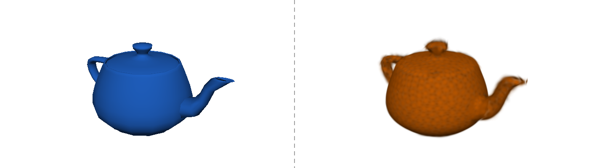

Splats and Triangles
Two ways to draw a scene, measured against each other.

The blue teapot is a shell of flat faces and the orange one is a cloud of blobs, both drawn by your graphics card from the same camera at the same budget. At 56 of each the faces make a lumpy cup while the blobs already read as a teapot. At 992 the faces have caught up. At sixteen thousand, laid over the exact mesh, the faces are the reference itself and the blobs have stopped improving, because we placed these blobs with a quick clustering pass and not with the fitting the paper does. The number between the halves is the measured lead in decibels. The rest of this article is what each half is made of, what each one pays per frame, and how that number is scored.
Triangle
The shape a graphics card is built to fill is the Triangle, three corner points joined into a flat face. Three points always lie on one plane, so a Triangle cannot bend. A four-cornered face can.
Both faces start flat, one shade each. Lift the far corner and the three-cornered face stays one shade: its three points still share a plane, so it tilts as a whole. The four-cornered face breaks along a crease into two Triangles, and at full lift the crease angle is far from zero while the Triangle's stays at zero. That is why the card accepts Triangles and nothing else. One fixed procedure fills every one of them, and no input can break it.
A whole object stored this way is a Mesh, a shell of Triangles given as a list of corner points and a note of which three form each face. A curved object has no flat parts, yet its Mesh is nothing but flat parts. The only cure is more of them.
The dashed egg is the shape we want. The red crescents are the egg the fan has not covered, and the highlighted bar is their measured share. Three Triangles leave more than half the egg bare. Eight leave a tenth, and forty-eight leave a third of one percent. Each doubling of the budget roughly halves the red and buys less than the doubling before. The corners are shared: the rim corner belongs to two neighbouring Triangles and the center to all eight. Drawn one Triangle at a time the eight would carry 24 corners; the Mesh stores nine, as the count reads. The Triangle count is the budget, and smoothness is what it buys. The teapot at the top is this egg in three dimensions: 56 faces make a cup, 16,256 make a teapot.
Two Triangles over one pixel of the screen, and only one surface is in front. The card settles this without sorting. For every pixel it keeps the depth of the nearest surface drawn there so far, an idea from 1974 that Wolfgang Straßer described in his thesis and Edwin Catmull published months later. The Depth Test is the check against that stored depth: a Triangle colors the pixel only where it is nearer than what is already there. Nothing about that rule depends on the order the Triangles arrived in.
The red Triangle sits at depth 2 and the blue one at depth 6. Under the marked pixel the stored depth is drawn as a bar: tall is far, short is near, dashed is cleared or lost. Draw blue first and the bar stands tall at 6; then red arrives nearer and the bar drops to the kept 2, leaving the dashed ghost of the depth it replaced. Flip the order: red first stores 2 at once, and the blue Triangle then bounces off it. Either order ends on the same picture. Solid shapes need no sorting, in any scene, at any count. The blobs pay for what Triangles get free here.
The Depth Test keeps the right color but cannot refund the color work already spent on the wrong one. Overdraw is the number of times the renderer colors one pixel in one frame, where 1 means exactly once. Anything above 1 is work spent on a layer that a nearer layer later covers, or that only tints what is behind it.
The grey background colors every pixel once, the grey base of the bar, 60 for 60 pixels. Each translucent disc colors every cell under it again: the first disc adds 10, and the fifth adds 13 more. With five translucent discs the total is 114 colorings for 60 pixels, an Overdraw of 1.9. Make the same five discs opaque and the Depth Test throws the hidden layers away before they are colored: 60 again. A translucent layer cannot be thrown away, because it changes the result.
This is the whole strength of the shell: hard edges and flat surfaces are cheap, and solid shapes sort themselves. Curves cost faces. Fuzzy things, hair and leaves and smoke, have no single surface to put a face on. The paper that introduced the blobs counts at least 30 finished images a second at 1920 by 1080 pixels as real time, and that is the bar both halves of the teapot have to clear.
3D Gaussian
A 3D Gaussian, or blob, is a soft see-through shape floating in space, densest at its center and fading smoothly outward, with no edge anywhere. A captured scene is nothing but a cloud of them: one to five million in the scenes the 2023 paper tested, under the name 3D Gaussian Splatting. There is no Mesh and no Triangle.
The two probes sit at the same offset from the center of the blob and of the Triangle; the dashed stem shows they match. The offset is measured in spreads, and the dashed ring is one spread. On the right the blue line stays at the top through one spread, where the blob already reads 61 percent, and then falls off the chart: beyond its edge a Triangle has nothing. The orange line is a smooth curve that keeps sloping down and never reaches the bottom. It crosses the red line, the smallest amount an 8-bit renderer can store, near 3.3 spreads, and the renderer stops there even though the math does not. A Triangle is a decision; a blob is a weight.
A round blob would be a poor building block. The Covariance Matrix is the 3-by-3 grid of numbers that gives a blob its shape. It lets the blob stretch by a different amount along each of three axes, and tilt those axes any way. Unequal stretches turn a ball into a needle or a flat sheet.
The dashed leaf is the target. For the ball the matrix reads 1 and 1 on its diagonal and zero off it. Stretch the long axis to three times the ball and the x entry grows to 9 while the y entry stays at 1: a needle lying across the leaf. Turn it through the tilt and the off-diagonal pair appears, always equal to each other, while some spread moves from the x entry to the y entry; at 30 degrees the blob fills the leaf. Stand it on end and the 9 has moved to the y corner. The footprint stays three times the ball's whatever the tilt. One blob is one leaf; a Mesh needs several Triangles to say the same thing. A real blob has three stretches and three tilts, and the orange teapot at the top is 16,256 of them, each a flat sheet laid along the surface.
Alpha is the fourth number stored with a color's red, green and blue, from 0 for fully see-through to 1 for solid. It is the fraction of whatever lies behind the color that the color hides. Alvy Ray Smith and Edwin Catmull added it to stored images in the late 1970s, and its first meaning was coverage: how much of a pixel a shape fills.
The red edge of a Triangle crosses one pixel. At 0 the edge grazes the pixel's corner and covers no sample center, so the coverage rounds to nothing. At one half it covers 8 of the 16 samples. The stored pixel on the right keeps only that fraction, a red at half strength through which the grey behind still shows by the other half. At 1 the last sample lights and the grey is gone. Every Triangle so far had an Alpha of 1.
The renderer must combine two translucent colors over one pixel. The rule is Alpha compositing, Porter and Duff's rule from 1984 for laying a front color over a back one. The result is the front color times its Alpha, plus the back color times one minus that Alpha. Front and back do not trade places in that formula.
With the red disc in front at Alpha 0.6, the red segment of the weigh bar is the front disc's share of the overlap pixel, as wide as its Alpha. The blue segment is what the disc behind keeps: 0.6 of the 0.4 the front let through, 24 percent. The pale remainder is the panel showing through both. Press the toggle and the blue disc takes the long segment; the two swatches hold both answers side by side, and the gap bar reads how far apart they are. At Alpha 1 the front disc owns the whole bar and the two orders differ by the full distance from red to blue, which is the Depth Test again. At Alpha 0.15 the gap is a 2 percent sliver and the two swatches are the same grey: order has stopped mattering. Nothing is faked here; the overlap is the browser applying the rule. For a front color with Alpha over a back color , the mix is
Each blob carries its own Opacity, a single learned number from 0 to 1 that says how much the blob's center blocks what lies behind it. The blob's falloff fades that number toward the edges. The faded value is the Alpha that Alpha compositing uses at each pixel.
Nobody types this number in. A fitting step draws the cloud from each photographed camera position, compares the drawing with the photograph, and nudges every blob's numbers until the two match. The paper calls that step training, and it sets this number per blob along with the center, the shape and the color. The number it stores can be any size; the S-shaped squash maps it to a value between 0 and 1, the purple dot. That one value scales the whole falloff: the center hides that much of the green behind and the outer ring about a tenth of it. The orange bell never changes shape against its dashed full-height copy, only height; at a raw value of −2 it is a low haze. Past a raw value of 4 the squash is already 0.98, so dragging to 8 moves nothing. A blob whose squashed value sinks under the red floor of 0.005 contributes nothing, and training deletes it; its ghost is all that is left. The blobs at the top were never trained; every one of them was handed an Opacity of 0.98, which is why a few dark ones from the far side still speckle through the orange.
A real surface does not show one color. A glossy table is white from one chair and brown from another. Spherical Harmonics store a color that changes with view direction as a short list of numbers per blob, 48 in all. The first three are the flat base color; each further group adds finer change across directions. The card never computes a blob's color from lights at draw time. The paper's renderer reads the color for a view out of those 48 numbers once per blob.
The ring is the color the blob shows from each direction, and the blob reads its color off the ring where the eye stands. With the base color alone, the first three numbers, the ring is one flat green and the eye sees the same color from everywhere. One more band adds nine numbers and a slow swing of color round the ring. All four bands add finer patterns, the small rings beside each row, and the count reaches 48: a sharp purple highlight the eye finds near 52 degrees and loses a few degrees away. With position, shape, Opacity and these 48 numbers, a blob is 59 numbers. A scene of a million blobs is a file of 59 million. The teapot blobs at the top carry only the base color, one shade each, baked from a single fixed light. We have a cloud of 59-number blobs and no rule yet for putting one on a pixel.
Splat
A camera looks at the cloud. Seen from it, each blob flattens to a Splat, the soft-edged oval patch of pixels the blob covers on the screen. Its size and tilt come from the Covariance Matrix pushed through the camera's view. Matthias Zwicker and his co-authors worked out that formula in 2001 and 2002, for drawing scenes stored as points. A Splat fades from its center instead of stopping at an edge.
The camera at the left looks at the blob, a needle whose long axis is raised 30 degrees off the table. The two sight lines bracket its reach. On the screen the needle lands as a leaning oval, and the renderer visits every pixel inside the dashed cutoff: 16 of the 64 broadside, 12 turned part way, 8 end-on, when the oval has shrunk to a near-circle. The Splat is the blob's counterpart of a Triangle's patch of pixels, and its shape is the blob's shape as this camera sees it. Turn the teapot at the top and every one of its 16,256 Splats is recomputed this way each frame.
Along the line of sight through one pixel, several Splats overlap, each with its own Alpha there. Transmittance is the fraction of light that still gets through every layer already stacked in front of a point. It starts at 1 at the eye, and each Splat multiplies it by one minus that Splat's Alpha. Each Splat adds its color times its Alpha times the Transmittance left when it is reached.
The ray from the eye carries the whole light budget, 100 percent at the eye. The first blob, with an Alpha of one half, takes half. Every later blob takes the same fraction of what is left, so the green remainder shrinks by the same factor each time, and the ray past the fourth blob is already faint. After four, 6 percent is left. Once the remainder falls under the dashed floor the renderer stops: with eight blobs it reads five and never touches the last three. The stop depends on Alpha, not on how many blobs exist. At Alpha 0.9 the light is gone after two blobs and six are never read; at Alpha 0.2 all eight are read and 17 percent still gets through. The real renderer stops when the stacked Alpha would pass 0.9999, a far stricter floor than the 5 percent drawn here. That stop is what keeps a million blobs affordable. With Splats in front-to-back order, each of color and Alpha , the pixel's color is
Alpha compositing gives a different answer in a different order, so the renderer must know the order. A Depth Sort orders every blob in view from near to far, once per frame, on the graphics card. The figure shows why the order is not optional. How the card sorts a million blobs in a few milliseconds is in the paper's Section 6, in the reading list below.
Three blobs hang in the air, seen from above, and the camera slides along its rail. Each sight line's length is that blob's depth, and the number beside it is its sort key. Sliding the camera moves no blob and no screen position; it changes only the three lengths. With the camera at the left the red blob sorts first, and the magnified pixel reads red over green over blue. Slide right and the green line becomes the shortest: the strip swaps two rows, green sorts first, and the swatch jumps to a new color. It jumps again when blue passes red and once more when blue is nearest. Each jump is the popping the paper warns about when two blobs trade places between frames.
Order dependence is the fee the blobs pay and the Depth Test let Triangles skip. It has two parts: a sort of the whole scene every frame, and every Splat that lands on a pixel ahead of the stopping point. The second part is Overdraw by another name. The teapot at the top pays it too: its blobs are sorted by depth before every frame, and each pixel under the orange teapot is colored by every Splat that reaches it, while each pixel under the blue one is colored once per face in front. On the paper's main benchmark the bill still came in at 134 frames per second, at the photos' own resolution, on one NVIDIA A6000. We can now draw both ways.
Fidelity
A score settles the argument, and the score starts from a photograph: a real photo from a known camera position that the renderer tries to reproduce. A fair one is a photo the renderer never trained on, so for the paper's main benchmark the authors hold back every eighth photo and score only those. PSNR, peak signal-to-noise ratio, is a number in decibels computed from the average squared pixel difference between the rendered image and that photo. Higher is better. The scale is logarithmic, so one extra decibel means about one fifth less squared error. Our scenes have no camera. The flat shapes below are scored against their exact outline, and the teapots at the top against the finest Mesh drawn the same way; that is why the blue half reads as the reference at the top of the slider.
The triangles' red square and the blobs' red square have the mean squared error as their area, inside a dashed frame of 0.25. Each rung up the ladder is a tenth of the error, so a square a hundred times smaller sits two rungs higher. Drag the budget up and the square loses most of its area in the first few steps, its pale ghost marking the step before, while the marker climbs the ladder in even rungs. The bracket between the two markers is their gap in decibels, which is a ratio of areas. The slider sets the target budget; the label under each square is the count the fit used, since the fan over the teapot overshoots once the handle joins in. At four the blobs lead; at sixteen the blue square has shrunk past the orange one; at the end of the slider blue is a dot at 38 decibels and orange is two rungs lower. On the tree the order flips and no budget flips it back, because a leaf is one blob and at least three Triangles. The corner chart holds every budget we measured. The three-dimensional teapot tells the same story in the same order: the blobs lead by 3.2 decibels at 56 of each, the faces pass them before 992, and the blobs level off near 25 decibels. Two caveats, both in the blobs' favor. We placed every blob in this article by grouping the surface into equal patches, one blob per patch, not by fitting them to photographs the way the paper does. And a blob is 59 numbers to the nine coordinates of a Triangle's three corners, so a contest by bytes would shift every orange point to the right. With the mean squared pixel difference and the largest possible pixel value,
PSNR has a blind spot. A blur moves every pixel only a little, so the squared error stays small while the edges vanish. The Structural similarity index measure (SSIM) scores from −1 to 1, and reads exactly 1 only when two images are identical. It compares brightness, contrast and local pattern inside a small sliding window, so it punishes the blur that PSNR forgives.
SSIM scores the image one window at a time, 8 by 8 pixels, and averages the 198 windows. The side window holds a vertical edge of the handle and the bottom window a horizontal edge of the belly. A blur turns the step in both windows into a ramp, so contrast and pattern both fall. A shift to the right pushes the vertical edge clean out of its window but leaves the horizontal edge where it was: at eight pixels the side window scores 0, the bottom one 0.87. Averaged over every window, SSIM prefers the crisp shift, 0.687 against 0.569 for the blur, while PSNR prefers the blur by four decibels, 14.6 against 10.2. At three pixels the two scores already disagree; sharp, both say identical. The paper reports both scores for this reason. Its trained blobs reach 27.21 decibels and 0.815 on the Mip-NeRF360 scenes, within half a decibel of Mip-NeRF360 itself. They do it at 134 frames per second instead of about one frame every 17 seconds.
Further watching and reading
- 3D Gaussian Splatting for Real-Time Radiance Field Rendering: the project page of Kerbl, Kopanas, Leimkühler and Drettakis, with the videos, the code and the scenes behind every number in the last section.
- The paper on arXiv: Section 6 is the tile rasterizer and Appendix C its sort keys, the parts this article compresses into the Splat section.
- Matthias Zwicker's publications: the EWA (elliptical weighted average) splatting papers of 2001 and 2002 that give a blob its on-screen oval, and the formula the teapot at the top runs per blob per frame.
- Compositing Digital Images: Porter and Duff's 1984 paper, seven pages that define the over rule and credit Catmull and Smith with the alpha channel.
- The SSIM index: Zhou Wang's page for the 2004 paper, whose second figure shows five images with the same squared error and structural scores spread across the scale.
- Depth testing at Learn OpenGL: the stored depth and the depth test as a programmer meets them, with code.
Final words
Transparency alone does not decide the race. A hard-edged, flat world is a few Triangles, and the Depth Test gives it visibility for free. A world of leaves, hair and glossy things is a cloud of blobs the renderer must sort and stack. It pays that bill because each blob says more than a face can. The deciding quantity is the total work for a target score, measured on the scene you have. The teapot at the top measures it on one.
Glossary
- Triangle ↩
- Three corner points joined into a flat face, the basic shape a graphics card knows how to fill. It is always flat and never folds over itself, so one fixed procedure fills every one of them. source
- Mesh ↩
- A 3D object stored as a shell of Triangles, given as a list of corner points and a note of which three of them form each face. The graphics card never sees the object, only the corners and the Triangles it builds from them. source
- Depth Test ↩
- The check a graphics card makes before it colors one pixel for a Triangle: it compares that Triangle's depth there with the nearest depth already drawn and keeps the nearer. With it, solid shapes need no sorting, whatever order they arrive in. source
- Overdraw ↩
- The number of times the renderer colors one pixel in one frame, where 1 means exactly once. Anything higher is work spent on layers that a nearer layer later covers or only tints. source
- 3D Gaussian (blob) ↩
- A soft see-through blob in 3D space, densest at its center and fading smoothly outward, that is the building block of a captured scene. Its numbers give a center point, a stretch and tilt, how much it blocks what lies behind it, and a color per view direction. source
- Covariance Matrix ↩
- The 3-by-3 grid of numbers that gives a 3D Gaussian its shape: how far it stretches along three axes and how those axes tilt. Unequal stretches let one blob be a thin needle or a flat sheet, so few blobs capture spokes and leaves. source
- Alpha ↩
- The fourth number stored with a color's red, green and blue, from 0 for fully see-through to 1 for solid. Smith and Catmull added it in the late 1970s to say how much of what lies behind a color still shows through. source
- Alpha compositing ↩
- The 'over' rule from Porter and Duff's 1984 paper for laying a partly see-through front color over a back color. The result is the front color times its Alpha plus the back color times one minus that Alpha, so order matters. source
- Opacity ↩
- A single learned number from 0 to 1 per 3D Gaussian that says how much its center blocks what lies behind it. The blob's falloff fades it toward the edges, and the faded value serves as the Alpha in Alpha compositing. source
- Spherical Harmonics ↩
- A way to store a color that changes with view direction as a short list of numbers per 3D Gaussian, 48 numbers in all. The first three are the flat base color, and each further group adds finer change across directions, so a blob needs no lights at draw time. source
- Splat ↩
- The soft-edged oval patch of pixels that one 3D Gaussian covers on the screen when the renderer flattens it toward the camera. Its size and tilt come from the Covariance Matrix, and it fades from its center instead of stopping at a hard edge. source
- Transmittance ↩
- The fraction of light that still gets through every layer already stacked in front of a point along the line of sight. It starts at 1 at the eye, and each Splat multiplies it by one minus that Splat's Alpha. source
- Depth Sort ↩
- The step that orders every 3D Gaussian in view from near to far, because Alpha compositing gives a different answer in a different order. The renderer does one sort of all blobs per frame on the graphics card, keyed by screen region and depth. source
- PSNR ↩
- Peak signal-to-noise ratio, a score in decibels for how closely a rendered image matches the real photograph it imitates, computed from the average squared pixel difference. Higher is better, and each extra 1 dB means the average squared error is about one fifth smaller. source
- Structural similarity index measure (SSIM) ↩
- A score from -1 to 1 for how closely a rendered image matches the photograph it imitates, exactly 1 only when the two are identical. It compares brightness, contrast and local pattern inside a small sliding window, so it punishes blur and missing detail that PSNR forgives. source